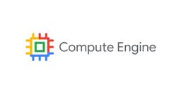
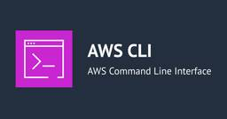

DevelopersIO
https://dev.classmethod.jp
DevelopersIOは、AWS、クラウド、生成AI、データ分析、アプリ開発などの技術情報から、DXやイベントレポート、SaaSやPython、Google Cloudなど多彩なトピックを紹介するクラスメソッドのオウンドメディアです。
フィード
CloudFront の AWS WAF SDK 自動統合を有効にして、HTML への script タグ挿入と応答の変化を確認してみた
DevelopersIO
アプリケーションや CI/CD にタグを組み込むことなく、web ACL の設定だけで WAF SDK のシグナルを Bot Control などの判定に利用できます。一方で、ETag と Range 要求の扱いにも影響します。
1時間前
Amazon ECS の新機能 「ECS Gateway」 を試してみた
DevelopersIO
Amazon ECS Gateway でパブリック用とプライベート用のゲートウェイを作り、サービスの入口を分けました。接続したサービスには、AWS が管理するドメイン（on.aws）の HTTPS エンドポイントが割り当てられました。
2時間前
[アップデート] Amazon Redshift の自動クロスリージョンバックアップを Redshift Serverless で試してみた
DevelopersIO
Amazon Redshift Serverlessの自動クロスリージョンバックアップ機能を東京から大阪へのコピーで試してみました。有効化時の最新スナップショットが次のスナップショット作成を待たずにコピーされ、以降のスナップショットとリカバリーポイントも自動でコピーされることを確認しました。
4時間前
Amazon CloudFront の CloudFront-Viewer-ISP と CloudFront-Viewer-TLS-Details をオリジンで受け取ってみた
DevelopersIO
Amazon CloudFront の CloudFront-Viewer-ISP と CloudFront-Viewer-TLS-Details ヘッダーを、オリジンで受け取って確認しました。ISP 名が空白を含む文字列で届き、keyExchange の値で PQC かどうかを見分けられました。
4時間前
【登壇レポート】DevelopersIO 2026 Tokyo に「コンテナサービスは ECS だけじゃない！Google Cloud の Cloud Runの魅力」というタイトルで登壇しました #devio2026
DevelopersIO
ECS をメインで扱う人に Google Cloud の Cloud Run の魅力を知ってもらいたくて、ECS と比較した Cloud Run の魅力をテーマに発表しました
4時間前
EBS スナップショットから、ログインできない EC2 の役割を無停止で調べてみる
DevelopersIO
用途不明なEC2インスタンスの実体を調査する必要があったため、EBSスナップショットから別のインスタンスに読み取り専用でマウントし、ファイルとログから役割・利用履歴・定期処理を特定する方法を試してみました。
4時間前

Compute Engine にブラウザコンソールから SSH しよう
DevelopersIO
Compute Engine のインスタンスには、ブラウザから SSH することができます。本記事では、プライベート環境のインスタンスに IAM 権限を通じて SSH アクセスするための設定手順を解説します。
4時間前
AWS ConfigのResourceComplianceを記録除外して一部リソースタイプだけコンプライアンス変更通知を設定してみた
DevelopersIO
AWS Configの費用高騰を避けたいけど、一部のリソース履歴は残しておきたい…そんな課題はありませんか？今回は、ResourceComplianceの記録を除外しつつ、EventBridgeとの組み合わせで特定のリソースタイプだけ準拠状態を記録する方法をご紹介します。
4時間前
Vite+ 1.0がリリースされたので、アルファ版から増えた機能を試してみた
DevelopersIO
Vite+ 1.0がリリースされたので、アルファ版のv0.2.1から1.4までに増えた機能を試しました。vpx、vp hooks、create-vite-plus、vp pmやvp envの新しいコマンドなどを、実行結果とあわせて紹介します。
5時間前

Grok Bot で自分の Mac の脆弱性チェックを毎日回してみた
DevelopersIO
Mac に入っているアプリやパッケージが最新の脆弱性の影響を受けるか、毎日自動でチェックして報告するボットを Grok Bot で立ててみました。読み取り専用で構成を取得し、公開の脆弱性情報と照合する仕組みと、実際に動かしてみた結果をお話しします。
5時間前
【AWS 初心者向け】EBS のルートボリュームを拡張して、Linux 上の容量の変化を確認してみた
DevelopersIO
EBS のサイズを変更したのに、Linux 上で使える容量が増えず、迷ったことはありませんか？この記事では、Amazon Linux 2023 のルートボリュームを実際に拡張しながら、ディスク・パーティション・ファイルシステムの違いと、各操作による容量の変化を初心者向けに解説します。
6時間前

Terraform の -minimal-refresh で plan 時間を短縮できるか検証してみた
DevelopersIO
Terraform 1.17 で追加された `-minimal-refresh` オプションを実際に試してみました。3 階層構成で refresh 回数がどれだけ削減され、plan 時間が短くなるかを検証した結果をお伝えします。
8時間前

Terraform で Aurora PostgreSQL のポスト量子 TLS 鍵交換を設定できるか検証してみた
DevelopersIO
Aurora PostgreSQL 18 でポスト量子 TLS が利用可能になりました。クラスタパラメータ `ssl_groups` の設定方法を Terraform で試しましたので、その結果をお伝えします。
9時間前

Claude Code v2.1.316 の主要アップデート - サブエージェントの effort 指定と Opus 4.8 fast mode の非推奨
DevelopersIO
Claude Code v2.1.316 がリリースされました。サブエージェントの effort を環境変数で指定できるようになり、セキュリティ関連の修正も多数含まれています。本日は、CLAUDE_CODE_SUBAGENT_EFFORT を試してみました。
9時間前

CORTEX_USER ・CORTEX_AGENT_USERデータベースロールによるCoCo in Snowsightの表示制御を確認してみた
DevelopersIO
Snowflake CoCo in Snowsightの利用制御向けのロールが変更されるため、新しい方法と、一部ユーザーのみに表示させる具体的な実装方法を確認してみました。
9時間前
ハロウィン仕様のKiroのサイトにアクセスして「Kiroween」に参加しよう！ 1
1
DevelopersIO
Kiroかわいい！ハロウィン仕様のKiroを観察してみました！それはそれとしてKiroのハッカソンも12月4日までやっていますよ！
11時間前

Superlogical の Rex の beta 版を試してみる
DevelopersIO
Superlogical のターミナルアプリ Rex がテスト公開されたので、macOS 版を入れて触ってみました。セッション永続化、リモート接続、Claude Code との連携まで、実際に試した結果をお伝えします。
12時間前

aws updateコマンドでmacOSとCloudShell環境をアップデートして違いを見てみた 1
DevelopersIO
aws updateコマンドを使って実際にバージョンアップしてみました！実はaws --versionにインストール方法が反映されていたのでそれをちょっと調べてみました
13時間前
「基本から分かる！AWSセキュリティ運用の考え方と任せ方」というタイトルで登壇しました
DevelopersIO
AWSセキュリティを基礎から積み上げていき、どうやってAWSのセキュリティサービスに任せつつ運用していくのか、という話をしました。一朝一夕ではうまくいきませんが、現在地を把握して進んでいきましょう！
14時間前

Windows の ChatGPT デスクトップアプリを Amazon Bedrock Runtime に接続して利用する設定手順
DevelopersIO
Mac ユーザーが Windows で試したときの備忘録です。
17時間前
AI 時代の新たなCMS「EmDash」を AWS 環境で動かして、WordPress からの移行を試してみた 3
DevelopersIO
WordPress に近い操作感ながら AI にも対応したCMS 「EmDash」 を AWS へデプロイして、AI エージェントからの記事投稿と WordPress からの移行を試しました。
18時間前

[Kiro] Kiro IDE? CLI? Crew? Choose the App According to Your Style
DevelopersIO
There are three different Kiro applications—IDE, CLI, and Crew—so it can be hard to know which one to use. I tested them all using the same Snake game to compare them and figure out the best use case for each
1日前
CloudflareのWaiting RoomでHTTPヘッダを参照するバイパスルールをダッシュボードから作成してみた
DevelopersIO
CloudflareのWaiting Roomで、あるHTTPリクエストヘッダが特定の値の場合に待合室をバイパスするルールを作成してみました。バイパスルール画面の式ビルダーでは作成できないのでカスタムルール画面で式を作成し、バイパスルール画面の式編集でその式を記載するのがポイントです。
1日前
Control Towerのコントロール、何から設定する？
DevelopersIO
AWS Control Towerのコントロールは1,600個以上もあり、初めてみた方は何から手をつければいいのか分からないのではないでしょうか…。というわけで本記事では、コントロールの分類方法と優先順位を整理して、実装に向けた考え方をまとめました。
1日前
「ここ 3 年くらいの CloudWatch アップデート について丸っと解説します」というタイトルで登壇しました #devio2026 82
DevelopersIO
CloudWatch めっちゃ進化してるぞ！！
1日前
【書評】 「Amazon Bedrock実践ガイド」を読みながらRAGの精度改善をしてみた
DevelopersIO
待ちに待った同僚のBedrock実践ガイドが出版されます！おめでとう！ということで書評を書きましたす
1日前
Windows の ChatGPT デスクトップアプリ with Bedrock を設定したら CreateInference の権限エラーになったときの確認ポイント
DevelopersIO
Windows x ChatGPT デスクトップアプリ with Bedrock でハマったところの備忘録です。
1日前
Kiro CLI V3 の 新機能 「Approve for me」 どの様な操作が確認になるか試してみた
DevelopersIO
Kiro CLI V3 の Approve for me で、どの操作が承認され、どの操作が確認に回るかを試しました。rm -rf、force push、/tmp への書き込みは確認なしで承認され、スクリプトを sh に渡す操作は確認に回りました。.git や .kiro/hooks への書き込みの確認と、.kiro/settings への書き込みの拒否は、固定規則によるものでした。
1日前